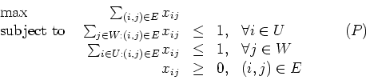
where xij is one if edge (i,j) is in the matching, and zero otherwise. Every basic feasible solution to both (P) and its dual (D) is integral.
- (a)
- (5 points)
What is the dual (D) to the linear program (P)?
(Hint: The dual of a linear program of the form
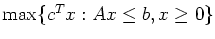
is
 .)
.)
- (b)
- (10 points) A node cover of G is a subset S of V such that every edge in E is incident to at least one vertex in S. What do the integral solutions to (D) correspond to? What do you conclude from strong duality?
- (c)
- (10 points) What are the complementary slackness conditions for the pair (P) and (D)? Interpret these conditions.
- (a)
- (10 points) Let M=(N,F) be a matroid defined on the finite set N and with independent sets F. The dual matroid 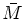 to M can be defined as the independence system on the finite set N with its maximal independent sets equal to the complements of the maximal independent sets in M. Show that is a matroid. (Note: The dual matroid is defined in a different way in Nemhauser and Wolsey. I want you to use the definition I've given you here to prove this result, and not to use the definition in the text.)
- (b)
- (10 points) A matric matroid M1=(N1,F1) can be represented using a matrix: elements of the finite set N1 correspond to columns of the matrix, and the independent sets in F1 correspond to linearly independent subsets of the columns. A graphic matroid M2=(N2,F2) can be represented using a graph: elements of the finite set N2 correspond to edges of the graph, and the independent sets in F2 correspond to acyclic subsets of the edges. Show that any graphic matroid is also a matric matroid.
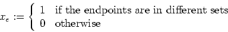
for each edge e.
- (a)
- (5 points) Show that x must satisfy the equality 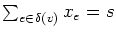 for each vertex v, where 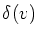 denotes the set of edges incident to vertex v.
- (b)
- (5 points)
Show that the dimension of the feasible region is no more than
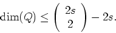
- (c)
- (Extra credit: 10 points)
Show that the dimension of the feasible region is exactly
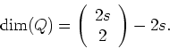
- (d)
- (5 points) Let C be a cycle of length 3 and let E(C) denote the
edges of this cycle.
Show that any feasible solution satisfies
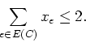
- (e)
- (5 points) Let C be a cycle of length s+1 and let E(C) denote the
edges of this cycle.
Show that any feasible solution satisfies
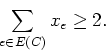
- (f)
- (10 points)
Solve the instance of the equipartition problem contained in
http://www.rpi.edu/~mitchj/matp6620/final/equi.mod
andhttp://www.rpi.edu/~mitchj/matp6620/final/equi8.dat
using a cutting plane method.
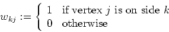
where k takes the values 1 and 2, corresponding to the two sides of the equipartition. Let g(p) denote the p-vector with every entry equal to one.
- (a)
- (8 points) Let W denote the 2 x 2s matrix whose (k,j)th entry is wkj. Show that the entries of W satisfy Wg(2s)=sg(2) and WTg(2)=g(2s).
- (b)
- (8 points) Let X denote the 2s x 2s matrix whose (i,j)th entry is the variable xij defined in Question 3 corresponding to the edge e=(i,j). Show that E-X=WTW for any feasible equipartition, where E denotes a matrix whose every entry is one.
- (c)
- (9 points)
Show that an SDP relaxation of the equipartition problem is:
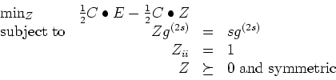
where Z is a 2s x 2s matrix and Cij=ce when the edge e=(i,j). How does the matrix Z relate to the matrices X and W given earlier? How can we exploit the results of Question 3 in this SDP formulation? What have we relaxed to arrive at this formulation?